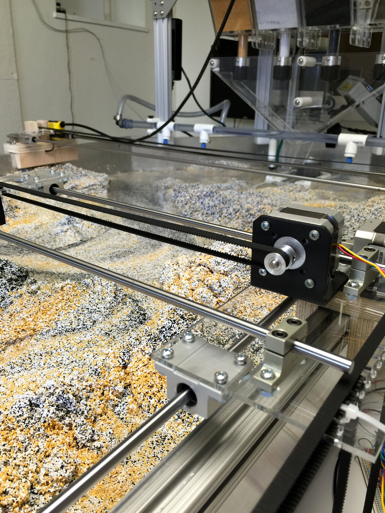
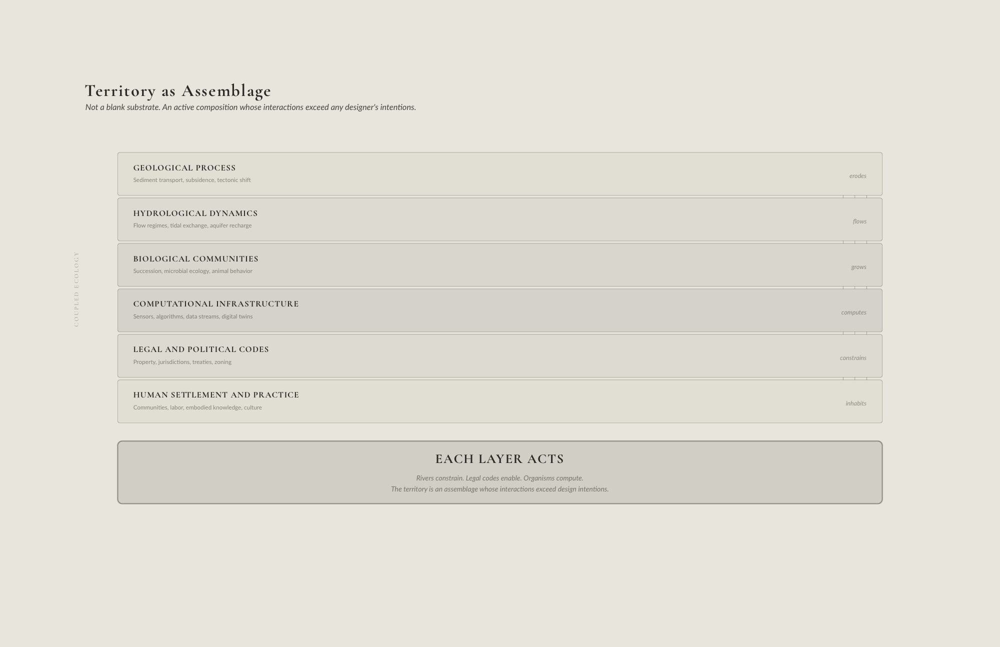
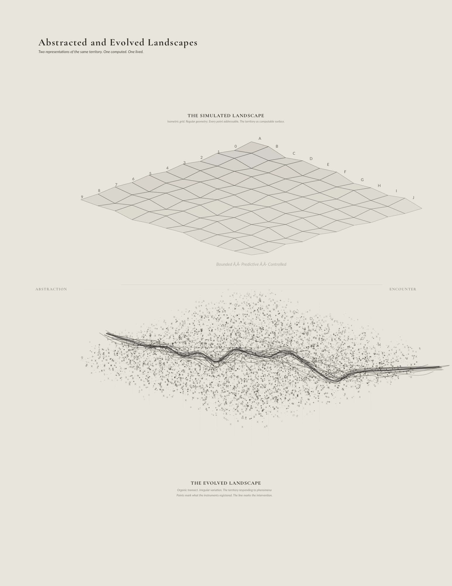

Adaptive Epistemologies and Neo-Wilds — Chapter 08
Adaptive Epistemologies and Neo-Wilds
Chapter 08
Landscape as Medium
The Model and the Site
The proposition emerges from a space between two forms of knowing
that have rarely been held together. Generations of watermen on the
Chesapeake, shrimpers in coastal Louisiana, farmers along the Rhine have
carried embodied, inherited knowledge of how their landscapes behave,
intuitions about current, tide, sediment, season that are irreducible to
data and untransmittable through instrumentation. Computational
modelers, meanwhile, have built sensing and simulation capacities that
extend far beyond what any human body can perceive, satellite-derived
indices, real-time turbidity measurements, machine learning
architectures that identify patterns across decades of data. But these
two forms of knowledge have remained largely separate, the embodied
knowledge cannot scale, and the computational knowledge cannot attend.
Hutchins (1995) demonstrates that cognition in real-world settings is
always distributed, across individuals, instruments, and environments,
and that the unit of analysis for understanding knowledge production is
never the individual mind but the sociotechnical system within which
minds, tools, and environments interact. The landscape-as-model is the
method that occupies the hybrid space between them, a framework in which
distributed sensing extends embodied intuition to territorial scales,
and in which embodied engagement with material systems grounds
computation in the specificity of place. Neither pole is sufficient. The
dissertation’s claim is that design practice, situated in that hybrid
space, produces a form of knowledge that neither pole can generate
alone.
Tim Ingold’s anthropology of skilled practice provides the
theoretical ground for this claim. For Ingold, knowledge of the
environment is not accumulated through detached observation, but through
what he calls “wayfaring,” the ongoing, attentive movement through a
world that is itself in motion (Ingold 2011). The practitioner who knows
a landscape knows it not as an object of analysis but as a field of
relations discovered through engagement, the shrimper reading tidal
patterns, the waterman anticipating sediment movement, or the farmer
sensing soil moisture through the resistance of a plow. This is
knowledge produced through “correspondence,” Ingold’s term for the
responsive, ongoing attunement between practitioner and environment in
which both are continually becoming (Ingold 2017). What the dissertation
proposes is that computational sensing and responsive infrastructure can
extend this correspondence to territorial scales without abandoning its
essential character, attentive, iterative, and constitutively entangled
with the systems being known. The landscape-as-model is not a
replacement for embodied knowledge but its scalar amplification. The
instrumented territory becomes a field of correspondence in which
designer, sensor, algorithm, and organism are all wayfaring
together.
This chapter proposes the most radical claim in the dissertation,
that the landscape itself can function as a model at 1:1 scale, a system
observed, managed, and evolved through distributed sensing and
responsive infrastructure, where each successive intervention produces
new knowledge rather than imposing a final solution. It is a
methodological proposition with specific requirements, distributed
monitoring that captures what the landscape is doing at resolutions
unavailable to human observation alone, responsive infrastructure
capable of being adjusted as conditions change, and evolving interfaces
through which the accumulating knowledge becomes available for design
action. The move from laboratory surrogate to territorial prototype
represents an epistemological shift, not only a technical one, from
models that remain ontologically separate from the territories they
represent to a practice in which the territory itself becomes the
experimental apparatus.
Mediums: Water, Soil,
Vegetation, Climate
To make this proposition credible, it is necessary to understand what
the medium of landscape actually is. Water, soil, vegetation, and air
are not abstract categories but the active materials through which
future environments must be negotiated, and this medium carries its own
agencies, resistances, and trajectories that complicate design intent.
Water does not follow abstract rules, it erodes banks, deposits sediment
in unanticipated locations, and reacts chemically with its context. Soil
is not inert substrate waiting to receive seed or structure but a
metabolic membrane alive with microbial life that cycles nutrients,
sequester carbon, and condition what can grow. Vegetation produces
microclimates, stabilizes slopes through root networks that hold
substrate varying with species and season, and fundamentally reshapes
hydrological regimes through transpiration and interception. To work
with these materials is to enter into negotiation with agents that
respond, adapt, and resist the controls imposed upon them (Bennett
2010).
Matter itself, as Karen Barad argues, is not a fixed, inert substance
awaiting human manipulation but is agentive, produced through
“intra-actions”, relationships in which neither humans nor materials
pre-exist encounters, but co-constitute one another through practice
(Barad 2007, 33). This means soil, water, and vegetation are not simply
resources to be deployed for design intent but active participants whose
behaviors emerge through their interactions with infrastructures,
organisms, and material flows. A wetland does not function because it
was designed correctly. It functions, or fails to function, because
ongoing intra-actions among hydrology, sedimentation, microbial
activity, plant succession, and management decisions produce conditions
that either allow it to persist or push it toward collapse. Design, from
this perspective, is about entering into sustained material-semiotic
engagement with systems that are already underway, already evolving,
already responding to forces that preceded design.
At its most totalizing, this methodology would engage trillions of
agents, sensors, actuators, organisms, flows, working individually to
produce collective knowledge, coordinated through computation paired
with distributed sensing and recording infrastructures. But this is a
maximum condition, not a threshold. The synthetic state already exists
across a range of technological deployments, weather stations feeding
irrigation controllers, SCADA systems managing reservoir releases,
satellite-derived vegetation indices informing land management,
citizen-science platforms aggregating species observations. What is
missing is not the technology but the framework, a method that clearly
articulates the agency of these systems as actors in the production of
landscape knowledge, rather than treating them as passive instruments in
service of human decision-making. The medium of landscape, engaged
simultaneously at multiple scales, is already a site of continuous
interaction, a relationship between articulated infrastructures that
alter dynamic systems within ranges rather than through predetermined
outcomes. The protocols that govern these systems must continually
evolve to catalyze and resist environmental processes as conditions
change (Gabrys 2016). Three components are necessary to reframe the
landscape itself as the model, distributed monitoring, responsive
infrastructure, and evolving interfaces.
Landscapes as Cybernetic
Systems
The concept of feedback, the basis for adaptive management,
originates in cybernetics, the study of “control and communication in …
animal(s) and the machine(s)” (Wiener 1948). Norbert Wiener developed
cybernetics during World War II to solve problems of anti-aircraft fire
control, where systems must adjust their behavior based on continuous
information about a target’s position and velocity. The insight that
emerged is that control in complex, dynamic environments requires
feedback loops that continuously compare actual performance against
desired outcomes and adjust actions accordingly (Wiener 1948, 6-8).
Landscapes display cybernetic tendencies whether we design them or
not. Consider how a tidal marsh maintains its elevation relative to sea
level. When elevation falls, inundation increases. When inundation
increases, sediment delivery increases. When sediment delivery
increases, elevation rises, until equilibrium is restored, assuming
sediment supply is adequate (Kirwan and Megonigal 2013). This
self-regulating behavior emerges from physical and biological processes
interacting through information flows, the marsh “senses” its elevation
relative to water level through inundation frequency, and vegetation
responds by trapping more or less sediment accordingly (Fagherazzi et
al. 2012). The feedback loop exists because the physical configuration
of the marsh produces it.
What computational management adds to these natural feedback loops is
the capacity to process information at scales and resolutions that
exceed biological agents’ capabilities, and to actuate interventions
that redirect flows at territorial scales (Gabrys 2016, 14). The
computational infrastructure does not replace natural feedbacks but
supplements them, creating hybrid cybernetic systems where machine
sensing and algorithmic control work alongside ecological
self-regulation (Patten and Odum 1981).
Claude Shannon’s information theory, developed concurrently with
Wiener’s cybernetics, provides a mathematical foundation for
understanding communication in these systems (Shannon 1948). Shannon
demonstrated that information is distinct from meaning, a sensor
transmitting data about water levels is communicating information
regardless of whether that information is meaningful to any observer.
What matters is the reduction of uncertainty. Before measurement, many
water levels were possible. After measurement, uncertainty collapses to
a specific value within the accuracy of the sensor (Shannon 1948,
379-83). The value of distributed sensing networks lies in their
capacity to reduce uncertainty across many variables simultaneously,
providing the information flows necessary for adaptive feedback to
operate across territorial scales (Hart and Martinez 2006; Rundel et
al. 2009).
The Limits of Surrogate
Models
Physical Models as
Bounded Experiments

Figure 08_03Sediment choreography combs, Dredgefest 2014, Louisiana State University | Bradley Cantrell, Justine Holzman
Physical hydraulic models, concrete basins with adjustable slopes,
controllable flows, and measured sediment feeds have been central to
river and coastal engineering since the mid-twentieth century. These
models operated as controlled experiments where variables can be
isolated, flows repeated, and outcomes measured with a precision
impossible in wild rivers.
Yet physical models are constrained by fundamental scaling problems
that cannot be fully resolved. Hydraulic similarity requires matching
dimensionless ratios, the Froude number for gravity-driven flows,
Reynolds number for viscous effects, Weber number for surface tension,
but satisfying all simultaneously is typically impossible (Heller 2011).
A model scaled 1:100 in length might achieve Froude similarity, meaning
gravitational forces scale correctly, but fail Reynolds similarity,
meaning viscous forces are disproportionately large. The consequences
cascade through the system and sediment behavior deviates from field
conditions, turbulence fails to reproduce, and boundary layer dynamics
drift from how the river actually performs.
This problem deepens when we consider what must be abstracted or
omitted. Sediment grains cannot be scaled down proportionally without
changing their physical properties and fine sands become clays in the
model, altering transport thresholds and deposition patterns (Le Méhauté
1976). Vegetation, biological crusts, and microbial films are critical
to real-world sediment cohesion and nutrient cycling but are typically
omitted, rendering the model as a hydraulic skeleton that moves water
convincingly but omits what makes a river or marsh function as a living
system.
Physical models also freeze time in particular ways. They can
simulate hours or days of flow, but not decades of succession, land-use
change, or policy evolution. They do not capture the slow drift of a
watershed’s sediment budget as upstream dams trap sand, or the gradual
encroachment of invasive species that alter roughness and flow patterns
over years and decades. Physical models excel at answering narrowly
defined questions, but they struggle with open-ended, adaptive questions
about how should a system be managed over fifty years as climate, land
use, and ecological communities indeterminately shift?
Infinite but Approximate
Computational models promised to overcome many of these limitations.
By the 1970s, numerical solutions to the St. Venant equations enabled
one-dimensional river flow simulations. By the 1990s, two-dimensional
shallow water models such as HEC-RAS and LISFLOOD-FP allowed spatially
explicit flood inundation mapping. By the 2000s, fully three-dimensional
computational fluid dynamics and landscape evolution models began
simulating sediment transport, channel migration, and delta growth over
millennia (Tucker and Hancock 2010; Coulthard et al. 2002). Unlike
physical models, computational models are not constrained by laboratory
space or by the need to match dimensionless numbers. They can run
forward in time indefinitely, testing multiple scenarios in parallel,
and they can incorporate additional processes of vegetation growth,
land-use change, and sea-level rise as modular components.
Yet computational models introduce their own epistemic challenges
that are less visible precisely because they are less tangible.
Numerical models of open natural systems can never be fully validated
because they rest on simplified representations of processes that are
incompletely understood, and because the initial conditions and boundary
conditions required to run them are never known with sufficient
precision (Oreskes, Shrader-Frechette, and Belitz 1994). Models are not
mirrors of reality but highly selective tools that embody specific and
pragmatic assumptions about what matters. A hydrodynamic model may
represent water as a continuum governed by Navier-Stokes equations,
ignoring the fact that rivers are textured by boulders, logs, root wads,
and ice, which produce turbulence and drag at scales the model does not
resolve. A landscape evolution model may simulate sediment flux using a
simplified transport law calibrated to one river, then apply it to
another with different lithologies, vegetation, and hydrology, yielding
plausible outputs that are nonetheless wrong in important ways (Willems
2008; Beven 2006).
Computational models are technical instruments and infrastructural
assemblages, hybrids of code, data collection networks, institutional
commitments, and political negotiations. Climate models did not emerge
from pure science but were co-produced with Cold War military
investments, international treaty negotiations, and the gradual
construction of global sensor networks. The model is a “vast machine”
that organize how climate is known, debated, and governed (Edwards 2010,
366-408). What gets modeled, at what resolution, using which calibration
datasets, and for whose benefit are never purely technical decisions but
are shaped by funding priorities, regulatory mandates, and institutional
capacities. A coastal model built to justify levee construction will be
structured to privilege flood stage reduction, protecting property
values, while a model built to guide wetland restoration, might
emphasize habitat connectivity and sediment budgets. Models do not
simply represent landscapes, they actively construct the terms on which
landscapes are understood, valued, and managed (Edwards 2010,
84-120).
The trade-off is unavoidable and it is often necessary to choose
between generality, realism, and precision (Levins 1966). A qualitative
ecosystem model can be general and realistic but imprecise. Models of
site-specific processes can be realistic and precise but not general.
Or, like mathematical abstractions, a model can be general and precise
but unrealistic. This is not a failure of modeling but a structural
feature of how abstraction works. The implication for environmental
management is that no single model type can represent the embodied
world. Models validate and produce knowledge that helps clarify
assumptions, explore consequences, and generate hypotheses, but they do
not replace observation, experiments, and adjustments in the field
(Starfield 1997).
Every model deployed within a Promethean frame forecloses the
questions it was not designed to ask. Levees built to a model’s flood
stage become political commitments that resist revision when the model
proves inadequate. Sensing networks calibrated to a specific set of
variables become institutional fixtures whose parameters resist change,
because altering them would invalidate the baseline against which years
of management decisions were justified. The computational layer does not
just produce outcomes. It produces outcomes that are progressively
harder to undo, because each layer of analysis adds confidence to an
epistemological commitment that was never examined. The
landscape-as-model, the proposition this chapter develops, is not an
extension of this trajectory. It is a deliberate reversal, designing the
model to be surprised rather than to confirm.
From Surrogate to Prototype
Landscape as Epistemic Thing

Figure 08_04Territory as Assemblage Diagram | Bradley Cantrell
If we agree that physical models and computational simulations cannot
fully capture the behavior of complex, evolving landscapes, what is the
alternative? The answer is not to abandon models wholesale but to add to
the sites of experimentation from the surrogate (the model) to the
prototype, the landscape itself, instrumented, monitored, and adaptively
managed for knowledge production. Chapter 06 traced de Monchaux’s
observation that models have historically moved inward, away from the
landscapes they shape, becoming more closed to view as they become more
powerful (de Monchaux 2025). The geomorphology tables reversed that
movement by returning the model to material engagement. The
landscape-as-model completes the reversal. The model does not merely
return to the territory. It becomes the territory.
This reframing treats environmental interventions as experiments from
which knowledge is generated (Holling 1978; Walters and Holling 1990).
Management actions are designed to test hypotheses about system
behavior. A sediment diversion is not only a flood mitigation measure
but a structured experiment in land-building, monitored to reveal how
much sediment is captured, where it deposits, what vegetation colonizes,
and how the configuration might be adjusted as understanding
improves.
The systems that constitute landscapes and the social-ecological
systems in which they are embedded do not exist in stable equilibrium
but cycle through phases of growth, conservation, release, and
reorganization. Management interventions occur within these adaptive
cycles, reinforcing existing regimes, triggering transitions to
alternate states. Disturbances at one scale can cascade up or down, and
interventions intended to stabilize another component can ossify the
system, making it brittle and vulnerable to larger disruptions
(Gunderson and Holling 2002, 33-75). This complicates the
landscape-as-model approach by insisting that experimentation must
attend to temporal dynamics across scales, from daily tidal cycles to
decadal vegetation succession, to century scale geomorphic change and
must acknowledge that interventions at one scale may inadvertently
produce vulnerabilities at another.
Consider a responsive sediment diversion that effectively builds land
during moderate river flows. That same diversion might reduce the
frequency of small disturbances that previously maintained vegetation
diversity and soil oxygenation. Over decades, this suppression of
variability leads to a homogeneous, less resilient marsh that is
catastrophically vulnerable when an extreme storm overtops the system.
Adaptive management must not simply optimize for a single goal like
maximum land-building but maintain variability, redundancy, and
modularity so that the system retains the capacity to absorb the
unpredictable and reorganize after disturbance (Folke et al. 2010). The
landscape-as-model is not only a technical apparatus for monitoring and
adjustment but also a site for cultivating adaptive capacity, with an
inherent ability for both ecosystems and institutions to learn,
innovate, and reorganize in response to change.
This approach does not reject abstraction. It integrates physical
models, computational simulations, and field-scale prototypes into an
ecology of methods. Physical models remain useful for testing specific
hydraulic configurations under controlled conditions. Computational
models remain essential for exploring parameter spaces, projecting
long-term trajectories, and synthesizing data across scales. But the
field-scale prototype provides the ground truth against which surrogates
are calibrated, and it generates forms of knowledge about ecological
response, social acceptability, institutional friction, and emergent
behaviors that surrogates cannot anticipate (Williams 2011; Allen et
al. 2011).
Hans-Jörg Rheinberger’s concept of “epistemic things” illuminates
what is at stake in this reframing. Experimental systems in molecular
biology function as epistemic things, arrangements of instruments,
materials, and protocols that are not designed to answer pre-formed
questions but to generate new questions through their operation
(Rheinberger 1997). A protein synthesis experiment does not confirm a
hypothesis. It produces unexpected traces, anomalies, and patterns that
redirect inquiry in directions the experimenter could not have
anticipated. Similarly, an instrumented wetland, a managed sediment
diversion, or a monitored tidal flat functions as an epistemic thing, a
dynamic system that teaches through its performance, its failures, and
its surprises. The geomorphology modeling research conducted in my own
practice demonstrates what this looks like in design.
The geomorphology table at REAL (2014–17) and the UVA Geomorphology
Lab (2017–present), a physical-digital hybrid environment of synthetic
sediment, programmable water flow, overhead depth cameras, and
ultrasonic range finders on motorized rails, was deliberately not a
scaled replica of any coastal landscape. Froude scaling and Reynolds
number correspondence, the mathematical conditions establishing
similitude between model and prototype in engineering hydraulic
modeling, were abandoned. The table was its own environment, designed to
generate principles through material encounter rather than to predict
outcomes in specific sites. It computes simultaneously in two registers.
The territory itself solves hydraulic problems, water finding paths,
sediment sorting by grain size, channels forming and migrating. The
sensors make that computation legible, the material computing what the
digital layer makes readable.
When Leif Estrada’s thesis research at REAL tested actuated sediment
insertions within the table’s flow field, the discovery was not a
validated technique for replicating outcomes in the Los Angeles River.
It was a principle, that redirecting sediment from a demolished concrete
channel could be achieved through choreographed operations that guide
outcomes within controlled ranges, with aggregated effects responsive to
current hydrology while projecting future goals. The model did not
confirm a hypothesis Estrada held before entering the laboratory. It
generated a question the laboratory’s material dynamics made possible,
how might the interaction between actuated gates and flow conditions
produce channel morphologies without specifying them in advance?
Embedding GIS data directly into the design model extended this further,
turning the model from a static picture into a structured database that
can be queried and simulated. The territory becomes an instrument of
inquiry rather than a record of fact, and the landscape’s response to
construction refines the hypotheses the database encodes. This is
Rheinberger’s epistemic thing functioning exactly as described,
producing surprises that redirect inquiry.
Andrew Boyd and Tyler Mohr’s “FIN” research at the same table
extended this further, a formal language of flow enhancers, resistors,
and redirectors, documented through iterative image analysis that
produced topographic plans expressing landscape as a gradient between
stasis and flux rather than a fixed form to be achieved. This notation
system, the epistemic artifact that the table’s operation made possible,
is the kind of knowledge that surrogates cannot generate, not a
prediction of what the landscape will be, but a grammar for how it can
behave. The prototype, in Rheinberger’s terms, worked.
This reframing has profound implications for design practice.
Designers are no longer solely authors of forms but orchestrators of
experimental infrastructures that generate knowledge over time. The
landscape is not a passive medium awaiting inscription but an active
partner in an open-ended process of inquiry (Schön 1983; Pickering
1995). Prototypes, in this sense, are not preliminary versions of final
solutions but living research instruments. Computational tools should be
understood less as mechanisms for optimization and more as platforms for
speculation and iterative refinement, enabling designers to “test
multiple futures” in situ and adjust as new knowledge emerges, as
Holzman (2018, 112) elaborates in relation to the methods developed
through the REAL and UVA Geomorphology Lab research programs described
in Chapter 3. This argument extends naturally to the landscape itself
and if computational models are speculative instruments, then
instrumented landscapes are speculative environments, producing data and
experiences that feed back into design decisions and the adaptation of
the systems themselves.
Landscapes and their human designers do not exist as separate
entities that then interact but are mutually constituted in an ongoing
material-discursive practice (Barad 2007, 140). An ecological
restoration project is not a human intervention acting on a passive
landscape but an entanglement in which plants, sediments, flows,
sensors, regulations, funding mechanisms, and human labor co-produce one
another. The “success” or “failure” of the restoration cannot be
attributed solely to design decisions or to ecological processes but
emerges from the specific configuration of relations that the project
enacts. This has methodological consequences in that adaptive management
is not a matter of humans learning about landscapes through observation
and adjustment, but of humans and landscapes co-learning and mutually
transforming within a shared practice.
Landscape as Model
To operationalize this methodology, to move from the laboratory back
to the field and treat the landscape itself as the model, three
technical and conceptual components are necessary, distributed
monitoring, responsive infrastructures, and evolving interfaces. Each
shifts the locus of knowledge production from abstract representation
toward an embedded, iterative practice.
Distributed
Monitoring: Sensing Across Scales
The first component is an approach to monitoring that is distributed
and functions across multiple scales, from remote sensing platforms that
capture territorial (watershed to planet) patterns to in-situ chemical
sensors embedded in soils and water bodies that register molecular
transformations. Rather than developing an “…all-seeing eye,” the
network should function to express the plurality and heterogeneity of
environmental conditions (Gabrys 2016). “If the satellite view has been
narrated as a project of making a global observation system and seeing
earth as a whole object, then more distributed monitoring performed by
environmental sensors points to the ways in which the earth might be
rendered not as one world, but as many” (Gabrys 2016, 14). This shift
from a singular, totalizing vision to distributed sensing acknowledges
that landscapes are not uniform surfaces but assemblages of processes
operating at different temporal and spatial scales simultaneously.
Distributed sensing networks recognize that no single vantage point
suffices to understand dynamic environmental systems. A coastal marsh
might be observed through satellite-derived NDVI tracking vegetation
health over kilometers, aerial LiDAR capturing millimeter-scale
topographic changes across hectares, fixed tide gauges recording water
level fluctuations at hourly intervals, autonomous surface vehicles
collecting turbidity and salinity profiles along transects, and soil
moisture sensors embedded at depths throughout the marsh platform
itself, transmitting data every fifteen minutes. Each sensor type
captures a different dimension of the system, spectral reflectance,
elevation, water stage, suspended solids, pore water chemistry, and
together they produce a synthetic, multi-scalar framing that cannot be
reduced to a single dataset (Passalacqua et al. 2015; Hart and Martinez
2006; Rundel et al. 2009).
Sensor networks are not solely technical devices but are also
political and infrastructural. The construction of global climate data
networks required international cooperation, standardization of
measurement protocols, negotiations over data access and ownership, and
sustained institutional commitments to maintain stations over decades
(Edwards 2010, 84-120). Similarly, distributed landscape monitoring
networks are embedded in institutional ecologies, who deploys sensors,
who has access to data streams, which variables are measured and at what
resolution, and how data is archived and shared all reflect funding
structures, regulatory mandates, and power relations. A sensor network
designed by a state environmental agency to track compliance with water
quality standards will be configured differently, measuring different
parameters, at different locations, and reporting to different
audiences, which is different than a network designed by a fishing
community monitoring salinity intrusion to protect economic vitality.
The landscape rendered by sensors is not reality, but a landscape
constituted through specific infrastructural and institutional
arrangements.
Distributed sensing is more than data collection, it is the
infrastructural precondition for adaptive management. Without continuous
feedback, adaptation is impossible. Sensors become the sensory organs of
knowledge production, enabling real-time adjustments during storm events
and long-term recalibrations as baseline conditions shift (Porter et
al. 2005). They make the landscape legible as a dynamic field of ongoing
processes that can be read, interpreted, and responded to.
The application of sensing within the environment identifies which
processes count and are acted upon, defining the terms on which a
landscape is known and valued (Borgman 2015). A landscape monitored
primarily for flood risk will be managed to minimize peak discharges and
protect property, likely at the expense of ecological variability. A
landscape monitored primarily for habitat quality will prioritize
species richness and ecosystem function, potentially tolerating higher
flood risk. A landscape monitored for carbon sequestration will
emphasize vegetation productivity and soil organic matter accumulation.
The design of sensing regimes is a political and epistemological act, it
establishes cultural values for knowledge production, whose questions
are addressed, and the values embedded in management decisions (Tironi
2018).
The Thresholds installation (2006) at LSU demonstrates the
political dimension of sensing at its most elemental. I painted a
high-contrast mural on the atrium wall because the camera needed a fixed
reference. By choosing its geometry, tonal range, and spatial extent, I
decided what the territory would be allowed to reveal. Without the mural
as calibrated reference, the blob detection algorithm would have
produced noise, contrast gradients with no stable context against which
to measure difference. With it, a specific kind of landscape became
legible, one in which human occupation is topographic event, in which
light is terrain, in which the contour line is revealed as a reading of
difference between instrument and context rather than a property of the
land. Changing the datum makes a different landscape emerge. A finer
datum proliferates isolines into noise, a coarser datum consolidates
them into generality. A different painting, a different calibration, a
different threshold for what counts as contrast, would have produced a
different landscape entirely. The choice of datum is always a choice
about whose experience of the landscape gets registered, what phenomena
are treated as information, and which landscape becomes available for
design action.
The second component consists of new forms of infrastructure that
capitalize on responsive technologies, utilizing small-scale
interventions that engage the environment through a range of physical,
chemical, and biological interactions. These infrastructures provide the
modifications that, when aggregated over time and space, produce
territorial scale environmental changes. Rather than relying on
monolithic levees calibrated to a single return interval or fixed
channels excavated with an optimized cross-section, responsive
infrastructures must be modular, adjustable, and even reversible. They
are designed not to impose a fixed solution but to learn and respond
through operation (Easterling 2014).
The range of such infrastructures is broad and growing. Adjustable
weirs whose crest elevations can be raised or lowered seasonally in
response to measured flow conditions and ecological needs. Sediment
diversion structures with variable gate openings that modulate the
volume and timing of sediment delivery to wetlands based on real-time
turbidity data and land-building targets. Floating breakwaters that can
be repositioned as shorelines migrate or as storm patterns shift.
Biogeochemical treatment systems whose media and flow paths can be
reconfigured in response to changing pollutant loads. These are active
systems that sense conditions and adjust their behavior or are adjusted
by managers informed by continuous streams of sensor data and model
projections, as Holzman (2018) describes in relation to the responsive
infrastructure methodology developed through the research programs
documented in Chapter 3.
The Sedimachine prototype at LSU (2012) operated at the
smallest useful scale of this logic. A robotic spillway with twelve
servo-actuated gates, each controlled through an Arduino
microcontroller, enabled programmable sequences of opening and closing
that choreographed water delivery across a plexiglass surface. The gates
could be scripted, repeated, and modified based on observed outcomes. A
sequence that produced unsatisfactory deposition could be adjusted. The
failure was recoverable. The gates shaped flow conditions, not
depositional forms. The sand performed its own score according to its
material intelligence, and the actual deposition patterns became the
data that informed the next intervention. This programmable hydrology
established, at experimental scale, the principle that responsive
infrastructure demands, that operations, not outcomes, are the design
lever.
Thirteen years later, the NEOM consultation (2022–25) applied the
same logic at territorial scale. When GeoHECRAS hydrological modeling
revealed that conventional channelization of the wadis surrounding The
Line would require infrastructure widths exceeding 200 meters with
hardened concrete at velocities incompatible with ecological function,
the responsive alternative was not a design preference but an
engineering necessity, reconceiving the traditional ephemeral wadi
systems as holding areas, slowing water to sustain life and safely
directing it into cisterns and caverns, while selectively ossifying some
terrain to concentrate erosion where it builds productive ravines, and
managing a fluctuating coastal isohaline zone through controlled water
inputs from The Line’s manifold. The infrastructure was designed to be
adjusted as the landscape it initiates develops, not a fixed solution
but a set of initial conditions from which the landscape would construct
its own subsequent configurations. In the northern landscapes, where
water is routed to erode and carve ravines sheltering life from harsh
climate, the topographic variation that provides shade and wind
protection for biological communities is the same topographic variation
that produces the visual complexity and spatial richness that make the
landscape habitable for human experience. The aesthetic and the
infrastructural are not separable because they emerge from the same
hydrological and geological processes operating on the same terrain.
The distance between the Sedimachine’s twelve Arduino gates
and NEOM’s internet of ecologies is not conceptual. It is scalar. The
same epistemological commitment holds at both ends of the spectrum, that
form is the outcome of designed operations rather than a predetermined
end state, that failure is recoverable and generates knowledge, that the
infrastructure is designed to be modified as the landscape responds.
Water moves with its own intelligence, finding paths of least resistance
and organizing sediment according to velocity and particle size. The
divergence between engineered gate sequences and the water’s emergent
patterns is where the knowledge lives.
The logic here is iterative rather than deterministic, grounded in a
recognition that environmental systems are indeterminate and cannot be
fully predicted in advance. Management should design for flexibility and
avoid configurations that cannot accommodate the unknown (Gunderson and
Holling 2002). Rather than optimal configurations produced through
modeling and monolithic constructions, responsive infrastructures are
deployed in phases, monitored for performance against multiple criteria,
and reconfigured based on what is learned. A sediment diversion might
begin as a pilot opening of modest size, operated for one or two seasons
while vegetation response, sediment deposition patterns, downstream
water quality impacts, and navigational effects are measured (Paola et
al. 2011; Nittrouer and Viparelli 2014). If land-building rates meet
targets and unintended consequences remain within acceptable bounds, the
opening might be widened. If sediment deposits in unproductive locations
or if salinity intrusion proves more problematic than anticipated, the
structure is adjusted, the gates reconfigured, operating schedules
revised, or complementary interventions added or subtracted. This
approach accepts that prediction is partial and that a reliable way to
learn how a complex system will respond is to intervene at a scale where
failure is recoverable, to observe carefully, and adjust accordingly
(Walters and Holling 1990; Westgate, Likens, and Lindenmayer 2013).
Adaptive management must cultivate an adaptive capacity, the ability
of socio-ecological systems to reorganize after disturbance without
losing essential functions (Folke et al. 2010). By deploying multiple
small interventions rather than a single large one, by preserving
modularity so that components can be reconfigured or replaced, and by
avoiding irreversible commitments that foreclose future options,
responsive infrastructures keep systems poised to respond to the
unknown. A network of small, adjustable infrastructures distributed
across a delta is more resilient than a single massive diversion because
the network can accommodate local failures, can be tuned to variable
ecological conditions across space, and can be incrementally expanded or
contracted as knowledge increases.
Responsive infrastructures operate at scales between traditional
design gestures and long-term management routines. They are not
micro-manipulations of individual plants or ephemeral flow paths, nor
are they territorial mega-projects whose failure is catastrophic. They
occupy a productive middle ground, infrastructures substantial enough to
alter system behavior in measurable ways but small and modular enough to
be adjusted, multiplied, relocated, or removed without triggering
cascading failures. The modularity is critical. If an intervention does
not perform as expected the failure is localized and recoverable, and
the knowledge gained from that failure directly informs the design of
the next iteration (Allen et al. 2011; Braun 2014). Failure, in this
framework, is not something to be avoided, it is a form of productive
feedback that increases knowledge and articulates future
interventions.
Responsive infrastructures do not simply act upon landscapes, they
intra-act with them, meaning that the infrastructure and the landscape
co-produce one another through their mutual engagement (Barad 2007, 33).
A sediment diversion does not deliver sediment to a passive marsh.
Rather, the diversion, the sediment, the flowing water, the vegetation
that colonizes newly deposited soils, and the monitoring sensors that
track changes together constitute an assemblage that produces
marsh-building as an emergent phenomenon. The diversion’s performance is
not determined solely by its hydraulic design but by the ongoing
relations among all these components. This perspective suggests that
responsive infrastructures should be designed with an awareness that
their behavior will be shaped by, and will shape, the landscapes they
engage, and that learning must attend to these relational dynamics
rather than treating infrastructure as an independent variable acting on
a dependent landscape.
Evolving Interfaces
The third component is a commitment to evolving interfaces, the
systems for visualizing, managing, and narrating the ongoing evolution
of environments alongside the lives of humans and non-humans. The
interface occupies a central position in a neo-projective framework of
landscape management, a framework in which landscapes are not delivered
as solutions but as unfolding processes that must be continuously
interpreted, communicated, and negotiated (Corner 1999; Meyer 2008). The
interface is a performative, cultural project, a space of engagement for
technical specialists, policymakers, and broader publics, used not only
to convey information but to educate, provoke debate, and sometimes
entertain. Interfaces are a design project that mediates between raw
sensor data and actionable knowledge, between the specialized discourses
of hydrology and ecology and the vernacular concerns of residents and
stakeholders, and between present conditions and bifurcating futures
(Lister 2007).
An interface might take many forms depending on audience and purpose.
A real-time dashboard displaying water levels, sediment fluxes,
vegetation indices, and nutrient concentrations for a managed delta or
coastal wetland, updated continuously and accessible through web
browsers to managers, scientists, regulatory agencies, and the public. A
parametric design environment that allows engineers and landscape
architects to test configurations of gates, channels, or planting
strategies and render predicted hydrological, ecological, and economic
outcomes across scenarios (Holzman 2018). A public-facing platform that
visualizes decades of landscape transformation, annotated with
narratives explaining why interventions were undertaken, what was
learned from their successes and failures, and how management strategies
have evolved in response. An augmented reality application that overlays
historical flood extents, projected sea-level rise zones, or planned
infrastructure onto present streetscapes and marsh platforms, making
processes that unfold over decades or centuries momentarily visible to
residents navigating their daily lives (Spirn 1984). Importantly, the
interface extends beyond these examples and should be understood as a
broad mandate to communicate between species and phenomena to evolve
relationships.
Data infrastructures, the systems that collect, store, process, and
visualize environmental information, are not neutral conduits as they
actively shape scientific and political discourse. Climate models became
credible not simply because they are mathematically rigorous but because
they are embedded in vast data infrastructures that made their outputs
visible, comparable, and actionable across institutions (Edwards 2010,
198-237). Similarly, landscape interfaces are not displays of
pre-existing facts but are instruments that construct the terms on which
landscapes are debated and managed. An interface that visualizes flood
risk but omits habitat quality or carbon storage implicitly prioritizes
certain values over others. An interface that shows only average
conditions but not variability obscures the role of disturbance in
maintaining ecosystem resilience. The design of interfaces is a form of
argument and a means of cultural production, it proposes what matters,
what should be monitored, and what futures should be pursued.
A thoughtfully designed interface can render legible the slow,
complex processes that otherwise remain abstract or invisible, the
sediment accreting millimeter by millimeter over generations, marsh
platforms rising imperceptibly in response to sea-level rise, nutrient
concentrations declining as treatment wetlands mature and expand their
filtering capacity. By making these incremental changes visible and
comprehensible, interfaces create publics, communities of interest,
concern, and advocacy that engage with, contest, or champion landscape
futures (Latour 1987). They have the capacity to transform passive
inhabitants into active participants in an ongoing experiment, agents
who can see the results of management decisions unfolding in real time
and who can contribute observations, ask questions, and demand
adjustments when outcomes deviate from expectations or values.
Importantly, this concept traverses species and phenomena asking design
to build pathways of understanding that may be physical or digital, a
connective fabric that connects discursive means of relating.
Interfaces should visualize cross-scale dynamics and adaptive
capacity, not just current states. An interface that displays only
present conditions provides limited insight into how the system is
emerging. A more robust interface communicates trajectories over
multiple timescales (daily tidal variation, seasonal patterns, decadal
trajectories), shows thresholds where state shifts might occur, and
indicates the degree of redundancy and modularity in management options
(Gunderson and Holling 2002). Such an interface would support not just
operational decision-making but strategic reflection that questions how
a management regime maintains the system’s capacity to reorganize after
disturbance.
Interfaces evolve as new data streams come online and incorporate
them. As new questions emerge from managers, scientists, non-humans, or
publics, the communication should be reconfigured to address those
questions. As management priorities shift in response to policy changes,
extreme events, or accumulated knowledge, the interface should reflect
those shifts, making transparent the reasoning behind decisions and the
trade-offs being navigated (Tironi 2018). This ongoing evolution is a
trait of initial design intent, a recognition that knowledge production
is continuous, that landscapes evolve, that publics and their concerns
change, and that the tools for understanding and managing landscapes
must change alongside them. An interface obsessed with a single set of
metrics or communications becomes an obstacle.
Together, these three components, distributed sensing, responsive
infrastructure, and evolving interfaces constitute the technical and
conceptual apparatus necessary for treating landscape as model. They
enable experimentation at 1:1, learning through iterative practice, and
adaptation across temporal scales. They shift the relationship between
designer and landscape from one of authorship, in which a fixed form is
imposed and expected to endure, to one of stewardship, in which an
open-ended process is orchestrated, monitored, and continually adjusted
in response to what the landscape itself reveals.
Landscape as the Model

Figure 08_09Abstracted and Evolved Landscapes Diagram | Bradley Cantrell
Occupying the Experiment
With landscape repositioned as the model, the research agenda shifts.
Rather than pursuing ever more accurate and computationally cumbersome
surrogates for the landscapes we occupy the project becomes one of
occupying the model itself by bringing experiments back into the field
at full scale (Felson and Pickett 2005). This does not constitute a
rejection of abstraction or a naive embrace of learning by doing without
theoretical grounding. Physical models and computational simulations
remain essential tools for exploring possibilities, testing
configurations in artificial sediments or silicon before committing
resources and projecting long-term trajectories in multiple scenarios.
But they are no longer the primary or sole sites of knowledge
production. The prototype, instrumented with distributed sensors,
equipped with responsive infrastructures, and made legible through
evolving interfaces becomes the epistemic center, the place where
hypotheses are grounded and where consequential knowledge is produced
(Nassauer and Opdam 2008).
This repositioning carries significant methodological implications.
The act of design generates hypotheses in spatial and material form,
hypotheses that are tested not through discourse alone but through
construction, monitoring, and evaluation (Lenzholzer, Duchhart, and Koh
2013). When the hypothesis is not merely “What if this levee were
designed two meters higher?” but “How will this coastal landscape
respond to a sediment management regime over a decade, and how should
interventions be sequenced and adjusted to produce new knowledge?” then
the primary research instrument is inhabited (Koskinen et al. 2011). The
landscape becomes an experimental system to generate surprises that
redirect inquiry, and to accumulate knowledge as a method to address
indeterminacy (Rheinberger 1997).
The credibility of climate science rested not only on the accuracy of
models but on the construction of vast infrastructures that made models
testable and their outputs actionable (Edwards 2010, 366-408).
Similarly, the landscape-as-model approach requires constructing
infrastructures of credibility to create institutional arrangements that
promote the value of knowledge production. The landscape prototype is
not solely a physical site but a socio-technical assemblage. Its
credibility depends on the robustness of this assemblage, the values it
expresses, not solely on the ecological or hydrological “correctness” of
a single intervention.
This approach also transforms how landscapes are inhabited and
narrated. If the landscape functions as an ongoing experiment rather
than a finished artifact, then those who live within it are not passive
subjects or recipients of expert decisions but participants in an
extended process of knowledge production. Interfaces that communicate
change over time, that explain the rationale behind interventions, that
present scenarios and trade-offs, and that solicit feedback from human
and non-human species transform publics into collaborators. The
landscape is no longer a black box managed by distant specialists but a
shared epistemic terrain, a place where different forms of expertise
meet and inform one another (Spirn 1984; Latour 1987). Inhabitants
contribute what sensors miss, the timing of bird migrations, the smell
of algal blooms, the locations where paths flood during particular tidal
and weather combinations. These communications, when integrated into
monitoring networks and fed back into management decisions, enrich the
knowledge base and strengthen the socio-ecological legitimacy of
adaptive interventions.
Adaptive capacity depends not only on ecological flexibility but also
on social learning and institutional innovation. A landscape-as-model
approach must cultivate socio-ecological resilience, an ability for both
ecosystems and human communities to reorganize after disturbance, to
digest feedback, and to innovate in response (Gunderson and Holling
2002, 398-412). This means designing not just for ecological robustness
but for institutional adaptability, creating management agencies that
can revise regulations considering new knowledge, funding mechanisms
that support long-term monitoring rather than short-term projects, and
governance structures that enable diverse stakeholders to participate in
decision-making. A sediment diversion might function ecologically but
fail socially if the institutions managing it cannot adapt to unexpected
outcomes, cannot incorporate local knowledge, or cannot negotiate
conflicts.
This approach demands epistemic humility. If the landscape is the
model and the model is an experiment, then surprises are inevitable and
should be anticipated as normal rather than aberrant. The landscape will
teach things that were not anticipated, about material behaviors, about
ecological trajectories, about social responses and those teachings will
require adjustments not only to physical infrastructures but to the
conceptual frameworks, management protocols, and socio-cultural
relationships (Pickering 1995).
This is not a failure of method but must be culturally accepted as
the normal operation of knowledge production. Andrew Pickering argues
that scientific work is fundamentally a back-and-forth negotiation
between human intentions and material resistances, a process in which
both the investigator’s plans and the phenomena under investigation are
transformed through interaction (Pickering 1995, 21-67).
Landscape-as-model embraces that negotiation. It accepts that landscapes
possess agency, that they will push back against interventions in ways
both predictable and surprising, and that the most productive response
is not to force compliance but to listen carefully to what is
elucidated, to adjust infrastructures and protocols accordingly, and to
promote the conversation. Adaptive management, in this framework, is not
a concession to uncertainty but a recognition that complex systems
communicate clearly when they respond on their own terms.
The Pocomoke Sound’s coastal islands and submerging marshes are not
case studies that illustrate predetermined design principles. They are
testing grounds that challenge design principles, generating the
friction between what the design frameworks propose and what the
landscape does that is the source of the knowledge the studio produces.
When a student prototype for stabilizing a submerging marsh edge
encounters the Sound’s actual tidal dynamics, sediment budget, and
biological community, what emerges is not a validation of the
prototype’s design logic but a renegotiation of it. The site is the
instrument of inquiry as much as the design is. This is what
model-as-site means at territorial scale. The Pocomoke Sound is used by
the studio in the way that the REAL table is used by the laboratory, as
an environment with its own elements of novelty and surprise, where the
research encounters resistance and resistance generates understanding.
The landscape does not exist as a fixed object awaiting human
intervention but is emergent through intra-actions with sensors,
infrastructures, organisms, flows, and management practices (Barad 2007,
206). The “landscape” is not a noun but a verb, an ongoing process of
material-discursive entanglement. To treat landscape as model is to
acknowledge this becoming, to design infrastructures that participate in
it rather than attempting to ossify it, and to cultivate the humility to
learn from the knowledge that emerges.
If landscape is to function as model then the question of how to
evaluate its performance becomes foundational. Assessment regimes in
restoration ecology and environmental management rely on historical
baselines focusing on a pre-disturbance condition, a pristine state to
which the landscape might return. Yet the conditions that produced those
historical configurations are themselves shifting and historical
baselines are moving targets, and in many cases they are fictions,
artifacts of an environment that no longer exists.
Novel ecosystems, systems that have crossed biotic or abiotic
thresholds into configurations without historical precedent, now
constitute an increasing proportion of the Earth’s surface (Hobbs,
Higgs, and Harris 2009). A wetland restored to historical species
composition may fail because temperature and precipitation regimes have
shifted beyond the tolerance envelopes of those species. The
landscape-as-model requires an evaluative framework that does not depend
on returning to states that are unobtainable, but instead assesses
performance in terms that acknowledge indeterminacy, change, and the
impossibility of equilibrium.
The concept of ecological fitness offers such a framework. Borrowed
from evolutionary biology, fitness in its broadest sense refers to those
properties of organisms or systems that are explanatory of persistence
and flourishing and inherently predictive of future capacity to survive
under conditions that cannot be anticipated (Peacock 2011). Fitness in
this sense is ecological rather than narrowly genetic and it is defined
by the interactions between organisms and their environments, and the
capacity of those interactions to sustain life over time.
Kent Peacock identifies three dimensions of ecological fitness that
move beyond the familiar Darwinian emphasis on competition. The first is
the ability to compete, to secure resources, to occupy niche space, to
outperform rivals for light, water, nutrients, or territory. This
competitive dimension has dominated evolutionary thinking since Darwin
and remains central to how ecosystems are conventionally assessed by
species richness, population densities, trophic efficiency, and biomass
accumulation. But competition cannot be the only trait that can account
for the persistence of complex systems.
The second dimension is an ability to cooperate through the formation
of mutualistic relationships, symbiotic partnerships, and facilitative
interactions where the success of one organism or assemblage depends on
and at times supports the success of others. Coral reefs, mycorrhizal
networks, pollination mutualisms, and nitrogen-fixing associations are
demonstrations that fitness is as much about collaboration as about
competition.
The third dimension, and the one that has received insufficient
attention in both evolutionary theory and landscape practice, is the
ability to construct through the modification, engineering, and active
shaping of the environments within which fitness is expressed.
The constructive dimension resonates with landscape practice. Niche
construction, as articulated by biologists studying how organisms alter
their environments, refers to the ways organisms modify environmental
conditions through their activities such as beaver dams that create
wetlands, termite mounds that regulate microclimate, or vegetation that
alters soil chemistry and hydrology (Odling-Smee, Laland, and Feldman
2003). These modifications do not benefit the individual organism alone
but reshape the environment for the current community and future
generations.
Algorithmic Cultivation (2019) staged this constructive
dynamic at the scale of the individual organism. The data operated as
“an unfiltered random catalyst for provoking the feedback loop of
stimulus and response.” The robot cut, the plants responded through
growth patterns, branching configurations, leaf size, color changes,
that the robotic system had not specified and could not have
predicted.
The plants were not passive recipients of robotic intervention. They
were constructing their own growing conditions through response to an
external stimulus that communicated nothing about what the optimal
growing condition would be. This is constructive fitness at minimum
viable scale, the organism building its own niche through response to
environmental provocation, without the environmental provocation
specifying what the niche should look like. The installation was
designed to run for a year. Technical difficulties limited operation to
weeks. But even in its truncated form, it demonstrated what the
constructive fitness framework predicts, that biological agency, given a
sufficiently varied set of provocations, produces configurations that
neither the organism nor the designer fully controls. The plant was
smarter than the model.
Each experiment on the geomorphology table documented a morphological
configuration that would never reoccur, even if the same experimental
parameters were repeated. The sediment would organize differently, the
channels would follow slightly different paths, the delta lobes would
form in slightly different positions. This combination – strict
experimental protocol producing unique outcomes – is the defining
characteristic of complex dynamic systems. They are rule-governed but
not deterministic, systematic but not repeatable, following recognizable
patterns while producing singular instances. The documentation practice
captures this duality. The protocol and the singular outcome, the
specific morphological configuration of this experiment, at this moment,
irreproducible even in principle. This duality is what landscapes
exhibit at every scale, from grain-scale sorting of sediment particles
to delta-scale distribution of discharge. That’s the point.
I extend Peacock’s three dimensions toward designed landscapes,
proposing that constructive fitness, the capacity to build conditions
favorable to one’s own persistence, describes both the marsh that
accretes its own substrate and the geomorphology table that generates
landforms hospitable to subsequent intervention. This extension is not a
borrowed framework from evolutionary biology but an original synthesis
with direct operational implications for design practice.
Extending this further, a landscape’s fitness includes its capacity
to construct conditions favorable to its own persistence and to the
persistence of the assemblages it supports. A constructed wetland that
improves its own substrate through sediment accretion and organic matter
accumulation, that gradually deepens its root networks and expands its
filtering capacity, that shifts conditions in ways that recruit
additional species and stabilize nutrient cycles, exhibits a
constructive fitness. It is not solely surviving disturbance or
competing for resources, it is actively building the conditions under
which survival and flourishing are more likely over time.
This reconceptualization has practical consequences for how
interventions are evaluated. Rather than asking whether a landscape has
returned to a historical benchmark, we ask whether it demonstrates
increasing capacity to persist, to absorb disturbance, to reorganize
after disruption, and to construct conditions favorable to evolving
function. These capacities are not static properties but tendencies that
must be assessed over time and across multiple variables. A landscape
might show declining species richness but improving nutrient retention,
or it may lose certain historical species while gaining functional
equivalents better suited to emerging conditions, or it might experience
periodic setbacks from storms or droughts while nonetheless trending
toward structural complexity. Fitness, in this sense, is multivariate
and progressive, a trajectory rather than a state, an optimization
towards plurality.
This framework aligns with recent developments in resilience theory
and adaptive management but adds an important dimension. Resilience is
often framed in terms of resistance to change or recovery to a baseline,
the capacity of a system to absorb disturbance without shifting to an
alternative state. But as Nassim Taleb argues, there is a category
beyond resilience, antifragility, the property of systems that improve
through exposure to stressors, volatility, and uncertainty (Taleb 2012).
Antifragile systems do not just survive shocks, they actively benefit
from them.
The principle of hormesis is that moderate doses of stressors can
stimulate adaptive responses that leave organisms or systems fitter.
This principle applies to ecosystems as well as to individual organisms
(Costantini, Metcalfe, and Monaghan 2010). Fire-adapted forests require
periodic burns to clear understory fuel loads and release nutrients and
without fire, they become vulnerable to catastrophic conflagration.
Floodplain wetlands depend on periodic inundation to deliver sediment,
replenish soil moisture, and maintain the disturbance regimes that
prevent competitive exclusion. A management regime that suppresses all
disturbance may produce a system that appears healthy in the short term
but is accumulating fragility, aggregating conditions for eventual
collapse (Holling and Meffe 1996).
Ecological fitness, understood as the capacity to compete, cooperate,
and construct under conditions of uncertainty, incorporates
antifragility as a criterion. A fit landscape does not resist all
possible disturbances but is one that has been designed to learn from
disturbance, to incorporate the knowledge that shocks provide, and to
reorganize to maintain or enhance functional capacity. This shifts the
evaluative question from “Has the system returned to its target state?”
to “Is the system developing capacities that will enable it to persist
and adapt as conditions continue to change?”
A restoration project evaluated through the lens of historical
fidelity might be judged a failure if it deviates from pre-disturbance
species composition, even if the deviation reflects adaptation to
changing climate regimes. A project evaluated by ecological fitness
would be judged by whether the emergent assemblage, however novel,
demonstrates the functional capacities needed for ongoing persistence
such as effective nutrient cycling, soil stability, hydrological
regulation, habitat provision, and/or carbon sequestration.
This also reframes the relationship between design and ecology. If
fitness includes the capacity to construct, then designed landscapes are
not anomalies to ecological process but extensions of it. What
distinguishes designed landscapes from beaver dams or termite mounds is
not that they involve construction but that they involve human
intention, institutional coordination, and the capacity for reflexive
adjustment based on monitoring and learning. The landscape-as-model
approach leverages these distinctively human capacities of foresight,
communication, technology, and adaptive management in service of
ecological fitness.
The integration of computational systems, distributed sensing
networks, machine learning, and autonomous management further extends
this constructive capacity. These technologies do not replace ecological
fitness but augment the landscape’s capacity to learn and adapt. The
coupled landscape, instrumented and responsive, is not less ecological
than its uninstrumented predecessor, it is more capable of the
continuous adjustment that addresses indeterminacy. Evans, Bratton, and
Agüera y Arcas (2026) describe intelligence itself as “high-dimensional
and relational, not a single quantity,” growing “like a city, not a
single meta-mind.” The instrumented landscape is this kind of
distributed intelligence, a territory in which human judgment, machine
learning, biological response, and material agency all participate in
knowledge production that no single agent controls or fully
comprehends.
This is not a claim that technology solves the problems of
environmental management or that computation can substitute for
ecological knowledge. Instead it suggests that the capacities for
sensing, learning, and adapting that define ecological fitness can be
enhanced through infrastructures that extend perception and accelerate
response.
Ecological fitness thus provides an evaluative framework suited to
the conditions of the Anthropocene, a framework that does not require
returning to states that are unattainable, that celebrates novel
ecosystems and emergent assemblages, that values the capacity to learn
from disturbance rather than resist it, and that recognizes designed
landscapes as participants in ongoing ecological processes of
construction and adaptation. It does not abandon the goals of
biodiversity conservation, ecosystem service provision, or habitat
protection, but it reframes those goals in terms that acknowledge the
irreversibility of environmental changes and the necessity of working
with the trajectories that change has set in motion. The
landscape-as-model, evaluated by ecological fitness, eschews nostalgic
restoration and is a progressive form of Reflexive Stewardship, a
practice oriented toward futures that are unpredictable but can be
prepared for through the cultivation of capacities that are valuable
under conditions we cannot anticipate. The cultivant, developed fully in
Chapter 11, names the practitioner's disposition within this practice.
Not control, not optimization, but ongoing attentive negotiation with
biological agency that is already working.
An Expanded Medium
Socio-Ecological
and Socio-Cultural Concerns
While the focus has primarily been on biophysical processes it is
essential to recognize that landscape is simultaneously a socio-cultural
medium. Any intervention at territorial scale operates within networks
of institutions, regulations, property regimes, cultural values, and
economic pressures that shape what is possible, permissible, and
desirable.
A responsive sediment diversion is not only a robotic hydraulic
structure designed to build land but it is also a political artifact
that redistributes resources and risks, potentially delivering land to
one parish while increasing salinity intrusion or flood risk for another
(Paola et al. 2011). As previously mentioned a sensor network is more
than a technical system for gathering environmental data, it is also a
surveillance infrastructure that raises questions about who has access
to data, who controls its interpretation, and whose concerns are
prioritized when thresholds are set (Gabrys 2016; Borgman 2015). An
interface is also a rhetorical device that frames certain futures as
inevitable or desirable while rendering others invisible or unthinkable
(Corner 1999).
The landscape-as-model approach must attend to these socio-cultural
dimensions as rigorously as it attends to sediment budgets, flow
regimes, and vegetation succession. This means designing not only for
ecological fitness but also for institutional adaptability, social
equity, and cultural resonance. It means engaging publics not as
obstacles to be managed through public relations campaigns but as
co-producers of knowledge whose observations, values, and situated
expertise enrich knowledge production and produce a plurality within the
outcomes (Allen 1999; Bélanger 2016). And it means recognizing that the
success of a landscape intervention is not measured solely through
biophysical metrics that address hectares of wetland restored, kilograms
of sediment deposited per year, or the percentage increase in species
richness but must also be evaluated in terms of livability, justice, and
meaning.
Does the intervention support the livelihoods of a broad range of
communities and species who depend on the landscape? Does it distribute
risks and benefits equitably, or does it protect favored communities
while exposing vulnerable ones? Does it resonate with cultural histories
and practices, or does it erase them in the name of ecological
optimization?
Human institutions, cultural practices, and economic systems are
integral to how landscapes respond to disturbance and reorganize
(Gunderson and Holling 2002, 73-94). A project that engages communities,
incorporates local knowledge, and distributes benefits equitably may
succeed even if its ecological outcomes are modest or take longer to
materialize, as it builds the social capital and institutional capacity
necessary for generational stewardship. The landscape-as-model
integrates social and ecological dimensions from inception, treating
them as mutually constitutive aspects of a single ecology.
Similarly, landscape monitoring and management infrastructures are
political, they encode assumptions. A sensor network developed to track
ecological “health” implicitly defines what is healthy, favoring metrics
aligned with conservation or restoration goals while marginalizing other
values, recreational access, cultural continuity, and economic
productivity that residents may prioritize. The landscape-as-model must
therefore attend to political dimensions, making explicit whose
knowledge is valued, whose voices shape decisions, and how conflicts are
negotiated.
This expanded frame does not dilute the technical rigor of the
landscape-as-model approach but enriches and grounds it. A sediment
diversion that functions hydraulically but simultaneously dispossesses a
fishing community that relied on particular salinity regimes and access
routes is not a successful experiment, it is a failed negotiation, one
that ignored critical dimensions (Spirn 1984). A sensor network that
produces accurate, high-resolution data on water quality and vegetation
health but excludes local ecological knowledge accumulated over
generations, knowledge about seasonal patterns, species behaviors, or
early warning signs that sensors do not detect is epistemologically
impoverished (Gabrys 2016). The landscape-as-model is a
socio-ecological-technical assemblage in which human institutions,
cultural practices, and political economies are as constitutive as
water, sediment, and vegetation. Its design, monitoring, and adaptive
management must be correspondingly multi-dimensional, integrating social
science, humanities, and community-engaged research with hydrology,
ecology, and engineering (Lister 2007; Meyer 2008).
Cultivating resilience requires attention to three dimensions,
resistance (the ability to absorb disturbance without changing state),
recovery (the speed of return to baseline after disturbance), and
transformation (the capacity to shift to fundamentally new
configurations when existing ones become untenable) (Folke et al. 2010,
10-12). The landscape-as-model navigates among these three. Some
interventions aim to resist change armoring a shoreline or stabilizing a
channel, accepting that this may reduce flexibility. Others aim to
accelerate recovery, restoring vegetation after a storm or reopening
sediment supply after a drought. Still others enable transformation by
reconfiguring infrastructure to accommodate rising seas or shifting land
use to support nascent economies. The choice depends not only on
biophysical constraints but on social values, institutional capacities,
and political negotiations.
If landscapes, infrastructures, and communities are mutually
constituted through ongoing intra-actions, then there is no “social”
sphere separate from an “ecological” sphere, and no “technical”
intervention that acts only on biophysical processes (Barad 2007, 140).
Every intervention reconfigures the assemblage, not just flows and
vegetation but also property relations, governance structures, cultural
meanings, and corporeal experiences. The sediment diversion changes not
only marsh elevation but also who has access to resources, how
communities navigate their territories, what stories they tell about
their relationships to land and water, and what futures they can
imagine. Landscape-as-model, from this perspective, is not a project of
optimizing an ecosystem according to historical criteria but a practice
of co-constituting new socio-ecological configurations through
iterative, material-discursive engagement. It must hold multiple forms
of knowing simultaneously, the biological, the computational, the
institutional, and the cultural, recognizing that design knowledge is
always partial and that the full picture requires plural intelligence.
When that plurality is genuinely constituted, the questions of justice,
meaning, and power answer themselves.
If the landscape is a medium that is alive, responsive, and
always in process then the designer’s relationship to it cannot be one
of specification and control. It must be one of ongoing interaction. But
what does that interaction look like? What frameworks exist for
designing systems that continuously learn from the environments they are
shaping? How does the feedback loop between intervention and response
get formalized as method?